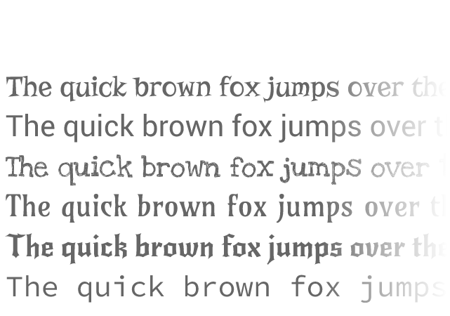

A lightweight tool to easily preview webfonts on every webpage.
To get started, just drag the orange bookmarklet to your bookmark bar.
Fontmarklet
Easy. Yet powerful.
Fontmarklet has an easy to use interface that allows you to quickly select an element and change its typeface. You can try it out! Just click on something in the example on the right.

Just Fonts. Right where you need them.
Are you tired of having to preview Webfonts on some random preview text? So was I! Until I built myself a solution.
Compatible. It's your choice.
Fontmarklet is a Bookmarklet, which means it runs in the browser. Which browser? Each of them! So just stick to your favorite.